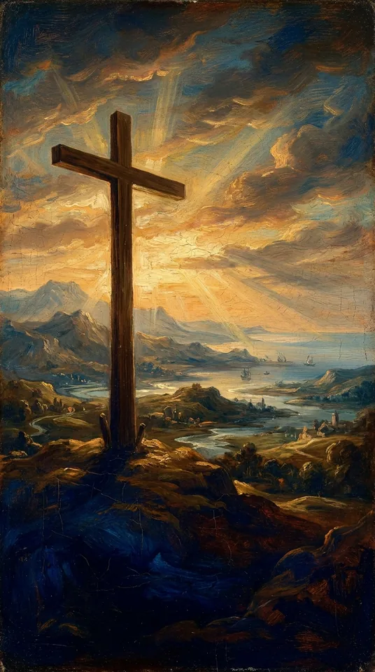
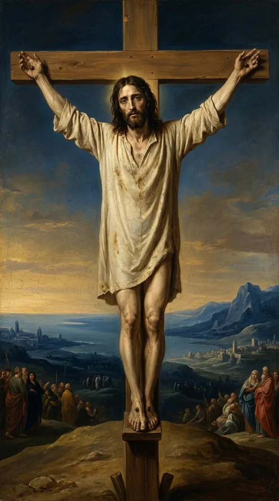
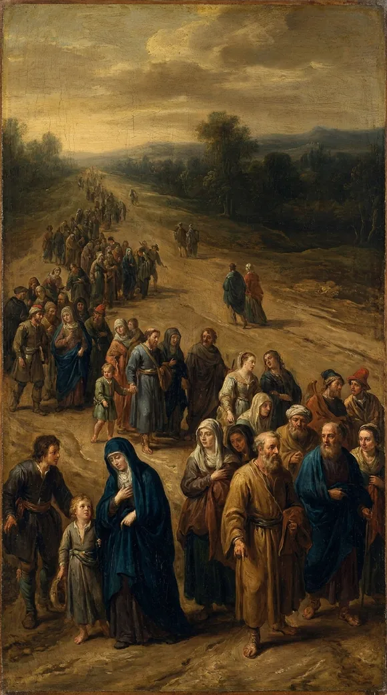
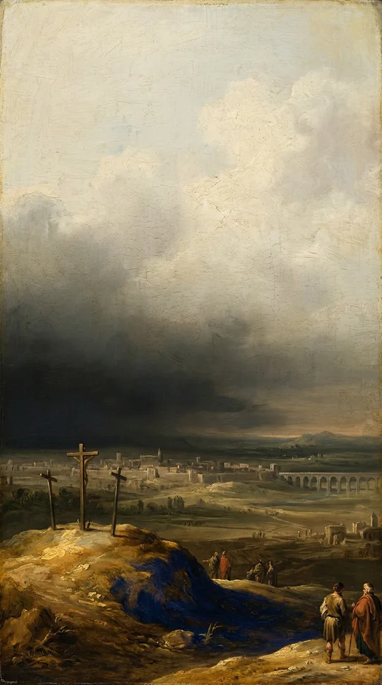

Video will be on YouTube when the series launches.
Psalm 22:27. The nations turning to worship, fulfilled through Christ.
The study behind this
Psalm 22 is a cry of King David, set down roughly a thousand years before Christ. It opens in the voice of a man surrounded and abandoned, then bends, line by line, toward a suffering David himself never endured and a rescue that reaches the ends of the earth.
The reading
One forsaken man, dying alone, and his own psalm ends with every nation on earth turning to the LORD.

After the suffering, the song throws its arms open:

All the ends of the world shall remember and turn unto the LORD: and all the kindreds of the nations shall worship before thee.
Psalm 22:27

A man dying in one corner of the Roman Empire, and his song says the ends of the earth will turn to God. It sounded impossible. But from that cross, and the empty tomb, the gospel went out, and people in nation after nation have turned to the LORD, worshipping the One who died and rose.

That is the reach of the cross. It was never a local tragedy, it was for the nations, all the kindreds of the earth.
And "the ends of the world" includes wherever you are, right now. The song that began with one man dying alone has swept the whole earth; the Lord it promised still has room for you to turn to Him.
Every quotation is the King James Version, verified word for word against the text.